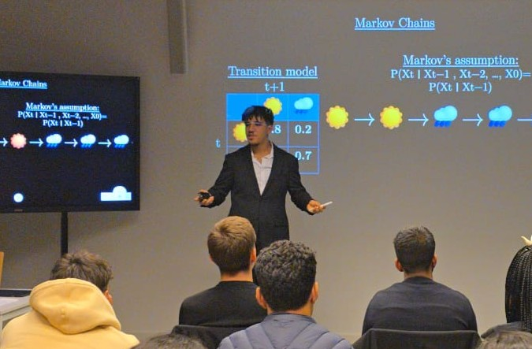

Shor’s Algorithm & QC
Simulation of Shor’s algorithm for integer factorization on quantum circuits.
View Project →Computer Science major · Mathematics & Modeling minor @ Constructor University
Passionate about bridging the gap between theoretical mathematics and scalable systems. Building tools for the future of computing.

First "Math Behind" Series · Constructor University
An 80-minute deep dive demystifying AI — from search algorithms to Deep Learning. I break down the mathematics of neural networks, backpropagation, and conclude with a live 3-minute explanation of how Large Language Models work from scratch.
View All Talks →Simulation of Shor’s algorithm for integer factorization on quantum circuits.
View Project →A comprehensive management platform serving 500+ active student users.
View Project →